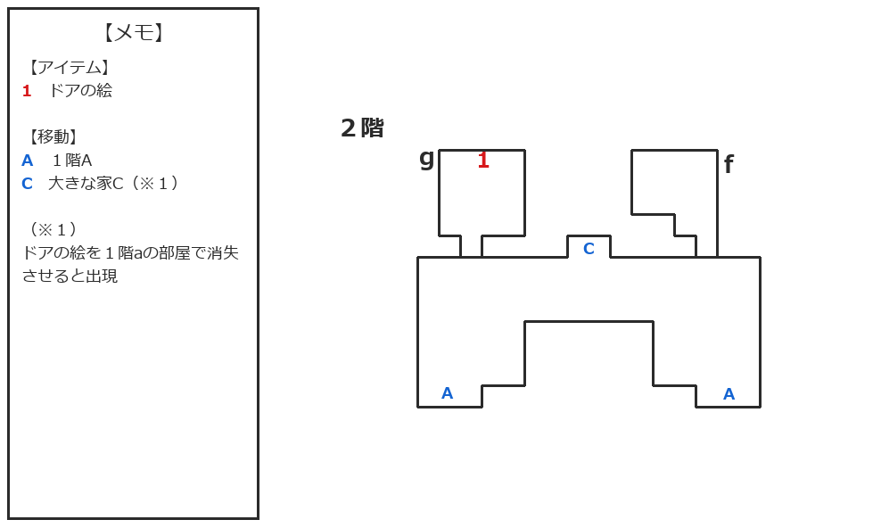
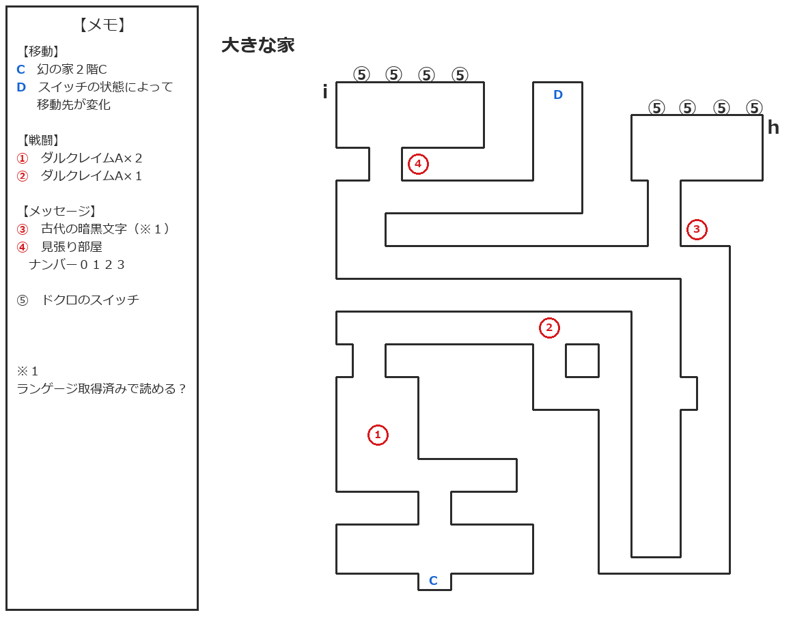

『Wizap! -ウィザップ 〜暗黒の王-』のプレイ日記10回目です。
前回は、幻の家2階にあるgの部屋で「ドアの絵」を入手したあと、エピソードを中断して宿屋へ戻り、セーブしたところで終了しました。
今回は、「ドアの絵」の使い道と日記へ文字を書くために必要なインクを探していきます。主人公はレベル5・役人の状態から再開です。
幻の家2階・大きな家マップ
今回の探索内容を反映した幻の家2階と、新しく訪れた「大きな家」のマップを掲載します。


大きな家のDは、ドクロのスイッチの状態によって移動先が変化します。古代の暗黒文字など、今回確認できなかった部分も、未確認情報としてマップに記録しています。
ドアの絵が砕け、2階に新しい扉が出現
まずは「ドアの絵」の使い道を探します。1階aの部屋の左側に、2階の光景と思われる絵があったことを思い出したので、調べに行きましょうか。
壁に掛かっている絵を調べると、突然、持っていた「ドアの絵」が砕けて消えてしまいました。さらに壁の絵も変化し、2階と思われる場所に3つの扉が並ぶ廊下が描かれています。
2階へ戻ってみると、予想どおり廊下の中央に3つ目の扉が現れていました。
なお、2階fの部屋は時間が現代へ戻ったことで、日記も元の状態へ戻っています。インクを見つけられないまま、日記へ未来を書き記す機会を逃してしまったのでしょうか……。
不気味な「大きな家」とダルクレイムA
中央の扉（2階C）に入ると、これまでの幻の家とはまったく雰囲気の違う「大きな家」へ移動しました。メッセージウィンドウには「まるで生き物のようらしいです」と表示されます。生き物なのかはよく分かりませんが、不気味な場所ですね。
大きな家の①では、レベル6のダルクレイムAが2体待ち構えていました。近接攻撃と毒攻撃を使用する敵で、少し狭い通路で2体を相手にしたため、こちらも少し被弾しました。
戦闘に勝利して1360の経験値を獲得し、ハイポーションを入手しました。毒を受けていた主人公には、このエピソードの開始前に購入していたアンチドウターを使用。HPはエルフリングとドワーフリングの効果で全快させておきます。
さらに先へ進むと、②付近をダルクレイムAが1体歩き回っていました。余裕はありましたし、経験値を稼ぐためにこちらから接触して戦闘へ。勝利して680の経験値を獲得しました。
今回はアイテムを節約するため、マクスターに解毒魔法「アンチ・ドウト」を使ってもらいました。今回確認した範囲では、解毒と同時にHPが0～10回復する効果もあるようです。体力回復を目的に使うほどではありませんが、毒によるダメージを補う程度には役立つかもしれません。
古代の暗黒文字と参加できないラルファ
戦闘後、道なりに進んでいくと、③の場所でメッセージが表示されました。しかし、調べても「古代の暗黒文字のようですが・・？」と表示されるだけで、内容を読むことができません。
「ランゲージ」の技能があれば読めるのではないかと思い、酒場で待機しているラルファを連れてこようとしました。ところが、ラルファは「あっ！ ハ、ハラがいてぇ」と言って参加してくれません。
マクスターで確認すると、エピソード発生後でもパーティメンバーの変更自体は可能でした。ラルファはエピソード発生前なら加入できたため、このエピソードには参加できない人物なのでしょうか。結局、古代の暗黒文字を読む方法は分からないままです。
8個のドクロのスイッチ
大きな家のhとiの部屋には、ドクロのスイッチが壁に4つずつ、合計8個並んでいます。それぞれのスイッチは、調べるたびにオンとオフを切り替えられました。
また、iの部屋の前には「見張り部屋 ナンバー0123」と書かれています。何か意味があるのでしょうか。
手掛かりが分からないままDから先へ進むと、大きな家の入口Cへ戻されてしまいました。どうやら、ドクロのスイッチを正しく設定しなければならないようです。
「大きな家のおはなし」に隠された数字
ここで、以前入手した童話「大きな家のおはなし」をまだ謎解きに使っていなかったことを思い出しました。この場所が大きな家ですし、内容を読み返してみましょう。
童話には、大きな家の中で「10人のお手伝いさん」「11匹のネコ」「100本の柱」を通り、ようやく「1人の主」に会えたと書かれています。数字だけを順番に並べると「10111001」です。
続いて主は、杖を持っていないなら「11日後」に「1本の木」の枝を取り、「10日間」祈り続けるように話します。それでも「10本」作って「1本」できるかどうかとのこと。こちらの数字を並べると「11110101」になります。
どちらもちょうど8桁で、ドクロのスイッチも8個です。オンとオフを1と0に置き換えれば、この数字がスイッチの答えなのでしょう。
杖を持っていないのであれば、普通は後半の数字を先に試すべきだと思います。しかし、どうなるのか気になったので、先に前半の「10111001」を試してみることにしました。
スイッチのオンを1、オフを0と仮定し、iの部屋の左側からhの部屋の右側へ向かって「10111001」に設定します。その状態でDから先へ進もうとすると、直前で「待て、杖は持っているのかね？」と呼び止められました。
家の主との遭遇と幻の家の消滅
杖は持っていませんが、駄目なら戻ればよいと思い、そのまま先へ進んでみます。
ところが、その先の部屋には家の主が待っており、そのままイベントが始まりました。……これ、杖を取りに行くタイミングを逃してしまったのではないでしょうか。非常にまずい予感がします。
会話の内容から、家の主は暗黒の門そのものと同一の存在だったように受け取れます。主人公たちに暗黒の門を消滅させてほしかったようですが、話の途中でダークロードがこの館の時を動かし始めました。
その影響で幻の家そのものが消え、主人公たちは元のティングル住宅地へ戻されます。「シナリオクリア！」と表示され、4080の経験値を獲得しましたが、何も解決できないまま終わってしまったような不安が残ります。
ウサギのマスコットを持つ人物
ティングル住宅地へ戻ると、普段は誰もいない場所に1人の人物がいました。話しかけると、ずっと昔、この場所には大きな家があり、母親がまだ小さかった頃に住んでいたそうです。しかし、邪神に狙われたため町を離れたのだといいます。
その人物は、母親が亡くなる前に渡してくれたというウサギのマスコットを握りしめていました。それは「神様の忘れもの」と呼ばれており、ここへ来れば、その神様に会えるような気がしたそうです。
幻の家で見た一族につながる人物なのでしょう。
あとから考えてみると、前回、理由が分からないまま消えていた「ラビットアイドル」も、名前からするとウサギに関係するアイテムです。今回のマスコットと同じものなのか、何か関係があるのかは分かりませんが、少し気になります。
幻の家が消えてしまった以上、今は何もできそうにありません。今回の選択が大きな問題につながらなければよいのですが……つながるのでしょうねぇ。グッドエンドのフラグを折ってしまった気がします。
最後に、貯まった経験値を使うため城で王様に話しかけ、主人公とマクスターをそれぞれレベル6にしました。ちなみに今回のレベルアップでは主人公の素早さが1下がってしまいました…。
今回のまとめ
今回は、「ドアの絵」を1階aの部屋で消失させたことで、幻の家2階に新しい扉が現れました。その先にあったのは、これまでの幻の家とは雰囲気の異なる「大きな家」です。
大きな家ではダルクレイムAと戦いながら探索を進め、古代の暗黒文字や8個のドクロのスイッチを発見しました。童話「大きな家のおはなし」に並んだ数字を手掛かりに、「10111001」を入力すると家の主のもとへ進むことができました。
しかし、杖を用意しないまま家の主に会うことになり、その後のイベントで幻の家は消滅しました。インクも見つからず、日記へ未来を書き記すこともできないまま、エピソード「幻の家」は終了しました。
シナリオクリアにはなりましたが、これで本当によかったのか、かなり不安が残る結末です。2周目以降では、杖を用意した場合や古代の暗黒文字を読めた場合に展開が変わるのか、改めて確かめてみたいですね。
現在のステータス
※力強さから守護までは、「装備品による補正後/元の値」の形で表記しています。
- レベル：6
- 職業：役人
- 最大HP / 最大MP：130 / 322
- 力強さ：17/17
- 防衛力：16/16
- 知性：10/8
- 器用さ：9/5
- 素早さ：-5/2
- 生命力：3/3
- 守護：7/7
- 攻撃：28
- 防御：10
- 武器：グレイトソード
- 防具：レザースーツ、インナープレート、スケイルメイル
- 特殊：エルフリング、ドワーフリング
- 技能：アンチフリーズ、ジャンプ、スイミング
次回やること
次回は、新しいエピソードを探しながら、主人公たちのレベル上げも進めていきましょうか。
← 前回：9回目 40年前へ戻った部屋とドアの絵、幻の家2階を探索
次回は作成後に追加予定です。
【作品について】
本ページで扱う作品名・各種権利は、各権利者に帰属します。
『Wizap! -ウィザップ 〜暗黒の王-』（スーパーファミコン）
©1994 ASCII CORPORATION
最終更新日：2026/08/30